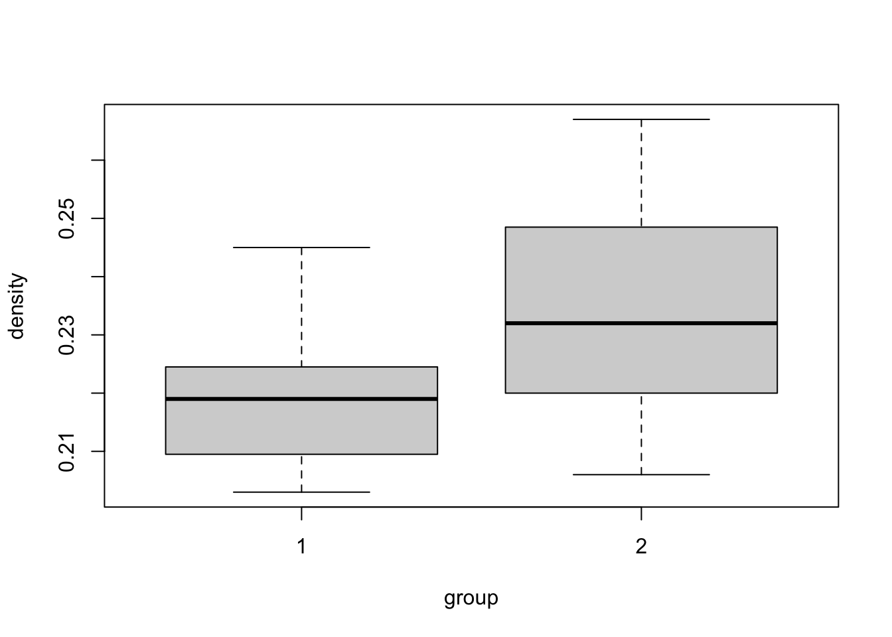

Total Sum of Squares (TSS) \[ \text{TSS} = \sum_{i=1}^n (y_i-\overline{y})^2, \] where \(\overline{y}=\frac{1}{n} \sum_{i=1}^n y_i\)
Explained/Model Sum of Squares (ESS or MSS) \[ \text{ESS} = \sum_{i=1}^n (\hat{y}_i-\overline{y})^2 \]
Residual sum of squares \[ \text{RSS} = \sum_{i=1}^n (y_i-\hat{y}_i)^2 \]
\(TSS = ESS + RSS\), that is \[ \sum_{i=1}^n (y_i-\overline{y})^2 = \sum_{i=1}^n (\hat{y}_i-\overline{y})^2 + \sum_{i=1}^n (y_i-\hat{y}_i)^2 . \] Dividing both sides by \(\sum_{i=1}^n (y_i-\overline{y})^2\) gives \[ 1 = \frac{\sum_{i=1}^n (\hat{y}_i-\overline{y})^2}{\sum_{i=1}^n (y_i-\overline{y})^2} - \frac{\sum_{i=1}^n (y_i-\hat{y}_i)^2}{\sum_{i=1}^n (y_i-\overline{y})^2} . \] Define \(R^2=\frac{\sum_{i=1}^n (\hat{y}_i-\overline{y})^2}{\sum_{i=1}^n (y_i-\overline{y})^2}\), which is the ratio of \(ESS\) to \(TSS\). Rearranging the equation, we have \[ \begin{aligned} R^2 &= 1-\frac{\sum_{i=1}^n (y_i-\hat{y}_i)^2}{\sum_{i=1}^n (y_i-\overline{y})^2} \\ &= 1-\frac{RSS}{TSS} \\ &= \frac{ESS}{TSS}. \end{aligned} \] Note that
Note that in a sample of size \(n\), we could always obtain a perfect fit (\(R^2 = 1\)) simply by regressing \(y_i\) on a set of \(n\) linearly independent explanatory variables.
More generally, increasing the number of explanatory variables cannot reduce the fit as measured by \(R^2\).
Adding an explanatory variable that is irrelevant in the sample (s.t. the estimated coe¢cient on this variable is zero) leaves the fit unchanged.
While adding a variable that is not irrelevant in the sample (s.t. the estimated coefficient is not zero) improves the fit.
Some researchers prefer to report an “adjusted \(R^2\)” or “R-bar-squared”, defined by \[ \overline{R}^2 = 1- \frac{n-1}{n-K}(1-R^2) , \] which impose a penalty as \(K\) increases in a given sample size \(n\).
F-test for that all \(K-1\) of the slope coefficients in a linear model are equal to zero, i.e., to test the exclusion of all explanatory variables except the intercept, \(\beta_1\). Formally speaking. \[ \begin{aligned} &\text{H}_0: \beta_2=\beta_3=\cdots=\beta_K=0 \\ &\text{H}_1: \text{At least one of the } \beta_2, \beta_3,\ldots, \beta_K,\text{is not zero.} \end{aligned} \] This is sometimes referred to as the F-test of one-way Anova.
The test statistic is given by: \[ F = \left(\frac{n-K}{K-1}\right) \left(\frac{R^2}{1-R^2}\right) \sim F(K-1, n-K) . \]
Quite often it is not very interesting to test the null hypothesis that none of the covariates have an effect. T-test is used to test for if one specific covariate, \(\beta_j\) has an effect. \[ \begin{aligned} &\text{H}_0: \beta_j=0 , \\ &\text{H}_1: \beta_j\ne0 . \end{aligned} \]
We use the following statistic \[ t = \frac{\hat{\beta}_j-\beta_j}{se_{\hat{\beta}_j}} \sim t(n-K) . \] We reject \(\text{H}_0\) if \(|t|>c_{\alpha/2}\), where \(c_{\alpha/2}\) is the \(\left(1-\frac{\alpha}{2}\right)\) quantile of the \(t\)-distribution with \(n-K\) degrees of freedom.
The \((1-\alpha)\) confidence interval for \(\beta_j\): \[ [\hat{\beta}_j-c_{\alpha/2} \cdot se_{\hat{\beta}_j}, \hat{\beta}_j+c_{\alpha/2} \cdot se_{\hat{\beta}_j}] . \]
Dummy variables are useful to represent categorical predictors. For example, we usually set the variable woman as a dummy variable that only takes the values \(\{0,1\}\). \[ x_{1} = \begin{cases} 1 & \text{ if sex=woman} \\ 0 & \text{ otherwise} \end{cases} . \]
Given this notation we can formulate the regression model that involves a single dummy variable \(x_1\): \[ y_i = \beta_0 + \beta_1 x_{1,i} + \varepsilon_i . \] In this example,
the intercept \(\beta_0\) is equal to the conditional mean of \(y_i\) for the \(x_{1,i}=0\) subpopulation (men).
the slope \(\beta_1\) is equal to the difference in the conditional means between \(x_{1,i}=1\) (women) and \(x_{1,i}=0\) (men).
We considered a study of bone mineral density (in g/cm\(^2\)) for rats given isoflavone and for rats in a control group. We want to test if isoflavone have an effect on bone mineral density.
# load dataset
bonedensity <- read_csv("https://raw.githubusercontent.com/my1396/course_dataset/refs/heads/main/bonedensity.csv")
bonedensity## # A tibble: 30 × 2
## density group
## <dbl> <dbl>
## 1 0.228 1
## 2 0.207 1
## 3 0.234 1
## 4 0.22 1
## 5 0.217 1
## 6 0.228 1
## 7 0.209 1
## 8 0.221 1
## 9 0.204 1
## 10 0.22 1
## # ℹ 20 more rowsWe formulate as the following equation: \[ y = \beta_0 + \beta_1x_1 + \varepsilon , \] where \(x_1\) is a dummy variable indicating control/treatment groups. \[ x_1 = \begin{cases} 1 & \text{ if group=2 (treatment)} \\ 0 & \text{ if group=1 (control/reference)} \end{cases} . \] Let \(\mu_1\) be the expected outcome in the reference group and \(\mu_2\) be the expected outcome in the treatment group. That is \[ E(y|x_1) = \begin{cases} \mu_0 & \text{ if group=1} \\ \mu_1 & \text{ if group=2} \\ \end{cases} . \] This indicates \[ \begin{aligned} \beta_0 &= \mu_0\, , \\ \beta_1 &= \mu_1-\mu_0 \,. \end{aligned} \]
Run the regression.
# define group to be a categorical covariate (facotr)
bonedensity <- bonedensity %>% mutate(group = factor(group))
bonedensity## # A tibble: 30 × 2
## density group
## <dbl> <fct>
## 1 0.228 1
## 2 0.207 1
## 3 0.234 1
## 4 0.22 1
## 5 0.217 1
## 6 0.228 1
## 7 0.209 1
## 8 0.221 1
## 9 0.204 1
## 10 0.22 1
## # ℹ 20 more rowslm.density <- lm(density~group,data=bonedensity)
summary(lm.density)##
## Call:
## lm(formula = density ~ group, data = bonedensity)
##
## Residuals:
## Min 1Q Median 3Q Max
## -0.029067 -0.011367 -0.000367 0.009733 0.031933
##
## Coefficients:
## Estimate Std. Error t value Pr(>|t|)
## (Intercept) 0.218867 0.004027 54.343 < 2e-16 ***
## group2 0.016200 0.005696 2.844 0.00823 **
## ---
## Signif. codes: 0 '***' 0.001 '**' 0.01 '*' 0.05 '.' 0.1 ' ' 1
##
## Residual standard error: 0.0156 on 28 degrees of freedom
## Multiple R-squared: 0.2242, Adjusted R-squared: 0.1964
## F-statistic: 8.09 on 1 and 28 DF, p-value: 0.008227| Dependent variable: | |
| density | |
| group2 | 0.016*** |
| (0.006) | |
| Constant | 0.219*** |
| (0.004) | |
| Observations | 30 |
| R2 | 0.224 |
| Adjusted R2 | 0.196 |
| Residual Std. Error | 0.016 (df = 28) |
| F Statistic | 8.090*** (df = 1; 28) |
| Note: | ***: p<0.01; **: p<0.05; *: p<0.1 |
Box plots of the two groups. Box plot statistics:
boxplot(density~group, data=bonedensity)
We would like to determine a confidence interval for the treatment effect and test if the difference is statistically significant – \(t\)-test for equal sample means.
t.test(density~group, data=bonedensity, var.equal=T)##
## Two Sample t-test
##
## data: density by group
## t = -2.8442, df = 28, p-value = 0.008227
## alternative hypothesis: true difference in means between group 1 and group 2 is not equal to 0
## 95 percent confidence interval:
## -0.027867161 -0.004532839
## sample estimates:
## mean in group 1 mean in group 2
## 0.2188667 0.2350667Suppose that the data for the two groups are random samples from \(N(\mu_1, \sigma^2)\) and \(N(\mu_1, \sigma^2)\), respectively. Here we assume equal variance.
The observations are denotes:
We have all together \(n=n_1+n_2\) observations.
\[ \begin{aligned} &\text{H}_0: \mu_1 = \mu_2 \\ &\text{H}_1: \mu_1 \ne \mu_2 \end{aligned} \] Test statistic: \[ t = \frac{\overline{x_2}-\overline{x_1}}{se(\overline{x_2}-\overline{x_1})} \sim t(n_1+n_2-2) , \] where \[ se(\overline{x_2}-\overline{x_1}) = s_p\sqrt{\left(\frac{1}{n_1}+\frac{1}{n_2}\right)} \] with \[ s_p = \sqrt{\frac{n_1-1}{n_1+n_2-2}s_1^2 + \frac{n_2-1}{n_1+n_2-2}s_2^2}. \] We reject \(\text{H}_0\) if \(|t|>c_{\alpha/2}\).
Now suppose we have two dummy variables \(x_1\) and \(x_2\).
\[ \begin{aligned} x_{1} &= \begin{cases} 1 & \text{ if sex=woman} \\ 0 & \text{ otherwise} \end{cases} \\ x_2 &= \begin{cases} 1 & \text{ if the person is married} \\ 0 & \text{ otherwise} \end{cases} \end{aligned} \]